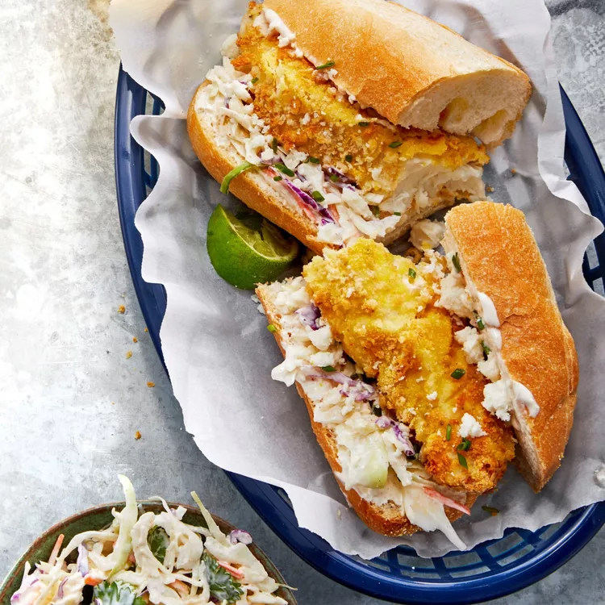

Air Fried Crispy Fish

Description
Serve these New Orleans-inspired famous 'po-boy' sandwiches for lunch or dinner and enjoy crispy air-fried white fish topped with chipotle coleslaw served on toasted hoagie rolls.
Ingredients
- 4 (4 ounce) fillets white fish, about 1/2- to 1-inch thick
- cooking spray
- ¼ cup all-purpose flour
- ½teaspoon ground black pepper
- ¼teaspoon salt
- ¼teaspoon garlic powder